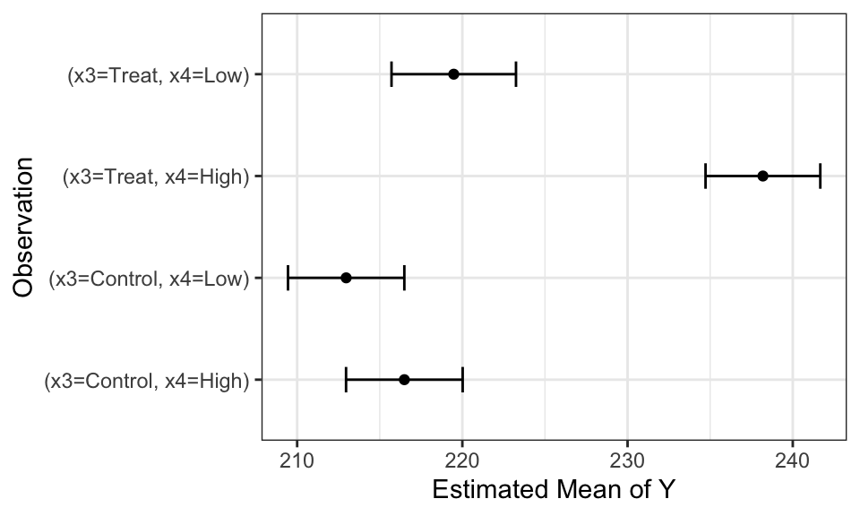
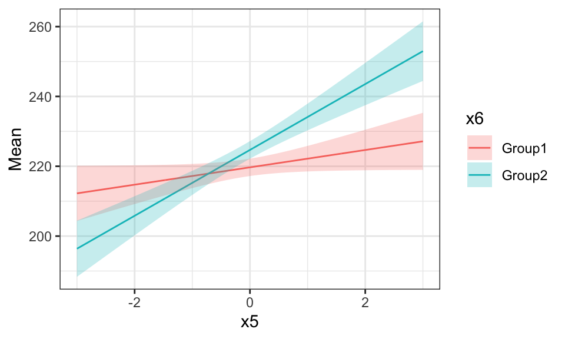
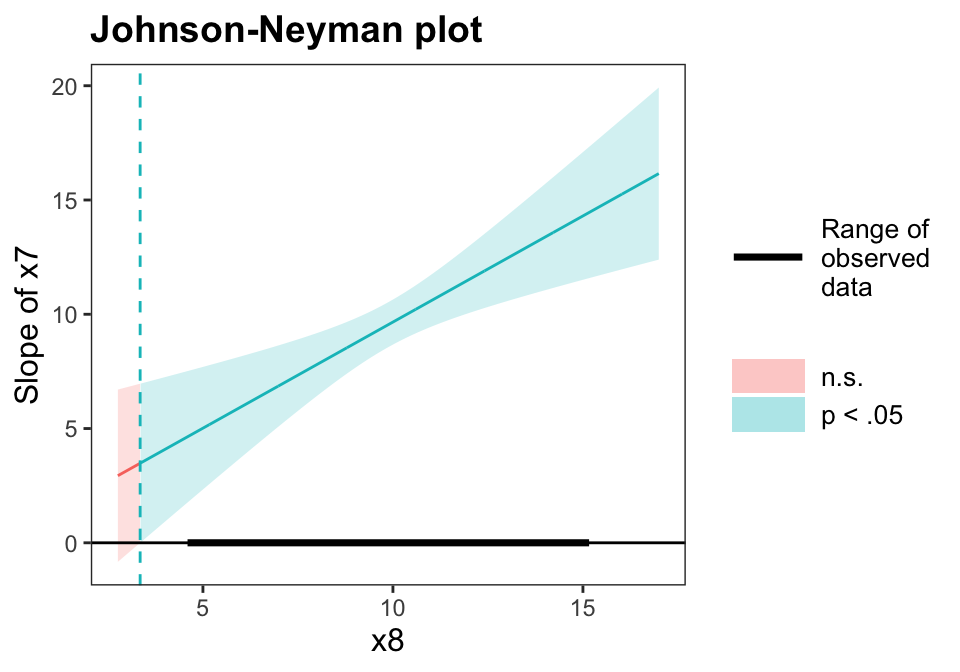
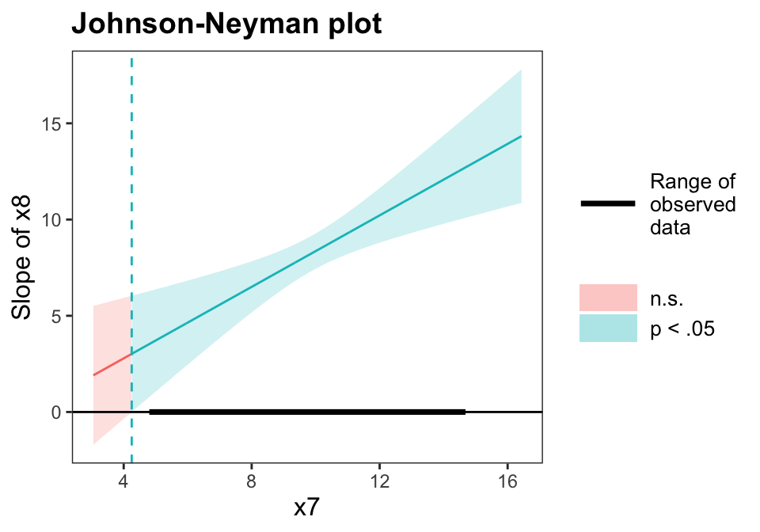
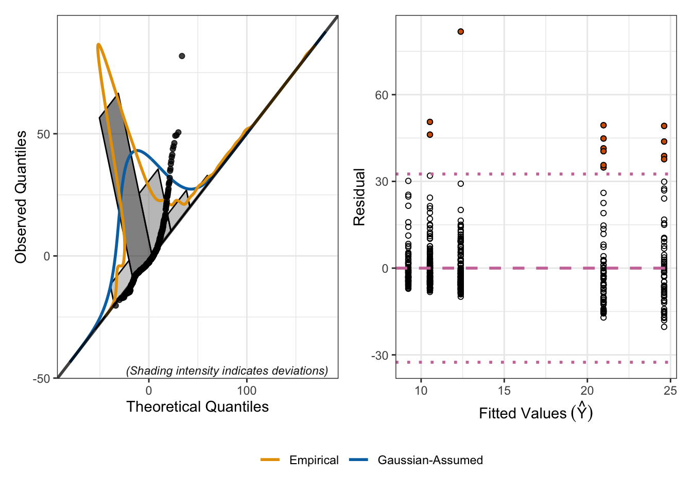
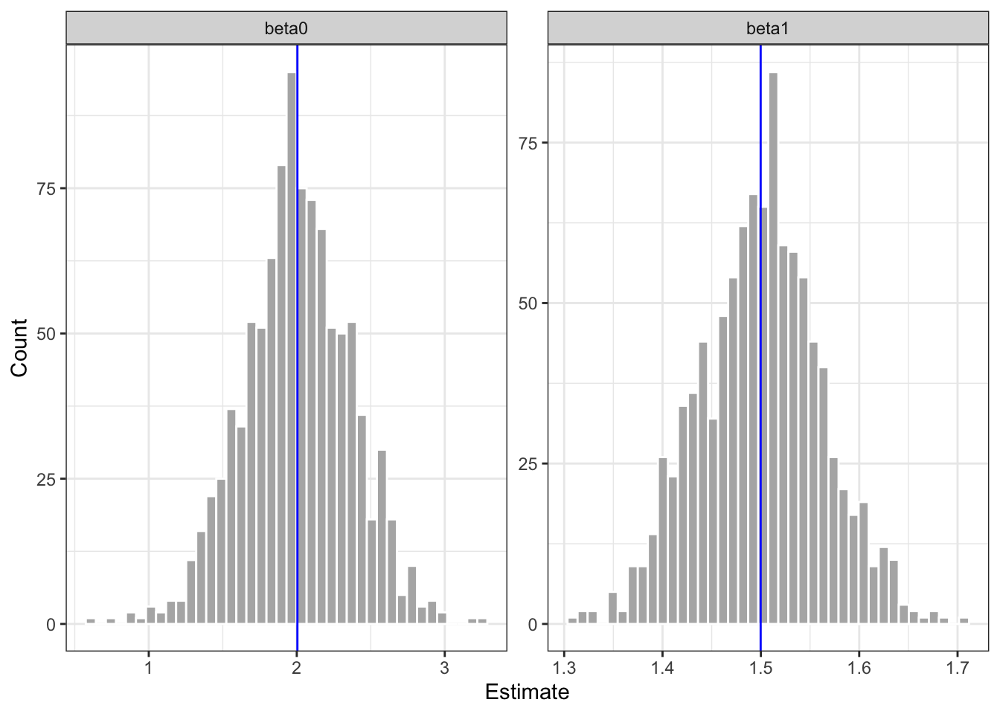
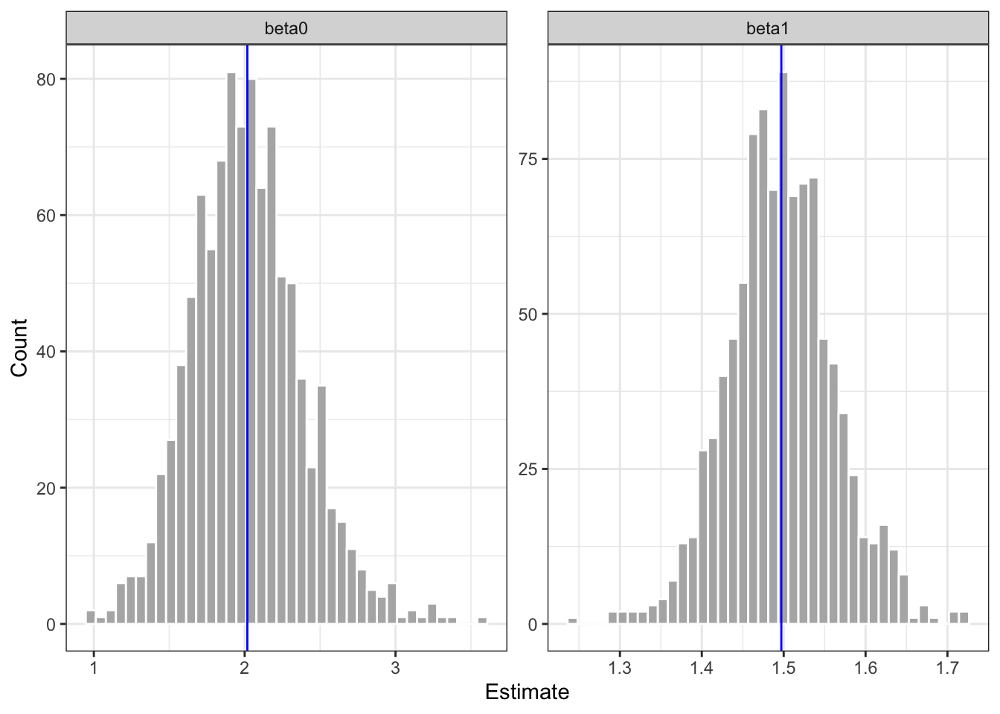
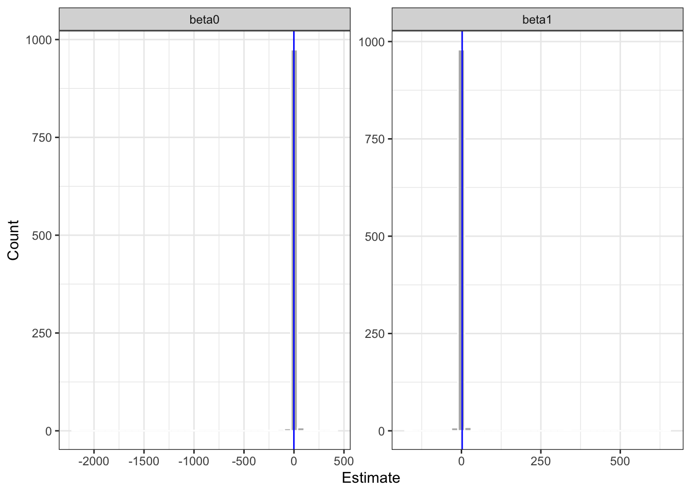

As shown in the residual scott plot in Figure 1, the residuals appear uniformly distributed around 0, with both a highly positive and negative outlier preent. The distribution of the residuals in the quantile plot indicates approximate normality. With respect to the outliers, as shown in Figure 2, while there are a few high leverage points and unusual points, the cooks distance and DFFITs plots suggest that they are not problematic for the regression.
1.3 Part c
Interpret the intercept, the coefficients on \(x_1\) and \(x_2\).
Solution
The intercept \(\beta_0\), is the expectation of \(Y\) in the absence of any other continuous or categorical features of the model. Thus it’s what the model expects of \(Y\) if all continuous variables (\(x_1,x_5,x_7,x_8\)) are \(0\), and all of the categorical variables \((x_2,x_4,x_6)\) are \(0\), meaning that the observation is not in any of the categories. The coefficient \(\beta_1\) indicates the increase in the expectation of \(Y\) for a per unit increase in \(x_1\), while the coefficient \(\beta_2\) is the increase in expectation of \(Y\) due to membership in category B.
1.4 Part d
Untangle and interpret the \(x_3*x_4\) interaction using algebra. Use Table 1 and Figure 3 for context.
Code
library(emmeans)emm.q1d <-emmeans(mod.q1, ~x3*x4) |># Don't average across levels: use |x2*x6data.frame() |>rename("Mean"="emmean","Lower"="lower.CL","Upper"="upper.CL")
Table 1: Estimated marginal means for the model in Question 1.
x3
x4
Mean
SE
df
Lower
Upper
Control
Low
212.9676
1.7871
238
209.4470
216.4882
Treat
Low
219.4792
1.9123
238
215.7120
223.2464
Control
High
216.4894
1.7916
238
212.9601
220.0188
Treat
High
238.1930
1.7631
238
234.7198
241.6662
Code
emm.q1d <- emm.q1d |>mutate(Observation =paste("(x3=", x3, ", ", "x4=", x4, ")", sep=""))ggplot(emm.q1d) +geom_point(aes(x=Mean, y=Observation))+geom_errorbar(aes(y=Observation,xmin=Lower, xmax=Upper),width =0.25)+# facet_wrap(~x2*x6)+theme_bw()+xlab("Estimated Mean of Y")
Figure 3: Estimated marginal means for the model in Question 1.

Solution Given the interaction \(x_3 \times x_4\), given this is a categorical x categorical interaction, we consider the state of the model under all combinations of values for \(I(x_{3i} == Treat), I(x_{4i} == High)\)
\(\beta_9 = 238.1930 - 212.9676 - 3.5218 - 6.5116 = 15.192\) Thus, we interpret the total effect of \(x_3, x_4\) to be \(25.2254\), \(6.5116\) due to membership in the treatment group, \(3.5218\) due to membership in the high group, and \(15.192\) the marginal increase due to membership in both groups.
1.5 Part e
Untangle and interpret the \(x_5*x_6\) interaction using algebra. Use Table 2 and Figure 4 for context.
Table 2: Estimated marginal trends for the model in Question 1.
x6
Slope
SE
df
Lower
Upper
Group1
2.4835
1.2942
238
-0.0660
5.0330
Group2
9.4309
1.3367
238
6.7977
12.0642
In Figure 4, the slopes are the same and just the intercepts vary depending on \(x_2\), \(x_3\), and \(x_4\).
Code
emm.q1e <-emmeans(mod.q1, ~x5*x6,at =list(x5 =seq(-3, 3, length.out=500))) |># Don't average across levels: use |x2*x3*x4data.frame() |>rename("Mean"="emmean","Lower"="lower.CL","Upper"="upper.CL")ggplot(emm.q1e) +geom_line(aes(x=x5, y=Mean, color=x6))+geom_ribbon(aes(x=x5, ymin=Lower, ymax=Upper, fill=x6), alpha=0.25)+# facet_wrap(~x2*x3*x4)+theme_bw()
Figure 4: Estimated marginal trends for the model in Question 1.

Solution As shown in Figure 4, the interaction coefficient \(\beta_{10}\) refers to the the slope of the group \(2\) line, \(9.4309\), while the coefficient \(\beta_5\) refers to the slope of the group \(1\) line. The coefficient \(\beta_6\) is the increase in expected Y due to membership in group 2, and thus the difference in y-intercept between the group \(1\) line and the group \(2\) line.
1.6 Part f
Untangle and interpret the \(x_7*x_8\) interaction using algebra. Use Table 3 and Table 4 for context.
Code
emm.q1f.x7 <-emtrends(mod.q1, var="x7", ~x7|x8, at =list(x8 =mean(dat.q1$x8) +c(-1, 0 ,1)*sd(dat.q1$x8))) |>data.frame() |>rename("Slope"="x7.trend","Lower"="lower.CL","Upper"="upper.CL") |> dplyr::select(x8, Slope, SE, df, Lower, Upper)
Table 3: Estimated marginal trends for the model in Question 1.
x8
Slope
SE
df
Lower
Upper
8.1309
7.9230
0.6751
238
6.5932
9.2529
10.0582
9.7129
0.5015
238
8.7250
10.7008
11.9854
11.5027
0.7396
238
10.0458
12.9597
Code
emm.q1f.x8 <-emtrends(mod.q1, var="x8", ~x8|x7, at =list(x7 =mean(dat.q1$x7) +c(-1, 0 ,1)*sd(dat.q1$x7))) |>data.frame() |>rename("Slope"="x8.trend","Lower"="lower.CL","Upper"="upper.CL") |> dplyr::select(x7, Slope, SE, df, Lower, Upper)
Table 4: Estimated marginal trends for the model in Question 1.
x7
Slope
SE
df
Lower
Upper
8.3824
6.8569
0.6069
238
5.6613
8.0525
10.2208
8.5643
0.4744
238
7.6297
9.4989
12.0592
10.2716
0.7325
238
8.8286
11.7146
A Johnson Neyman analysis using the interactions package for R(Long 2024), shows that the slope of \(x_7\) is statistically discernible for all observed values of \(x_8\) (Figure 5), and vice versa (Figure 6).
Code
library(interactions)johnson_neyman(mod.q1, pred = x7, modx = x8, control.fdr = T)
JOHNSON-NEYMAN INTERVAL
When x8 is OUTSIDE the interval [-13.08, 3.35], the slope of x7 is p < .05.
Note: The range of observed values of x8 is [4.69, 15.07]
Interval calculated using false discovery rate adjusted t = 1.97
Figure 5: Johnson Neyman interval for the model in Question 1.

Code
johnson_neyman(mod.q1, pred = x8, modx = x7, control.fdr = T)
JOHNSON-NEYMAN INTERVAL
When x7 is OUTSIDE the interval [-9.96, 4.25], the slope of x8 is p < .05.
Note: The range of observed values of x7 is [4.89, 14.60]
Interval calculated using false discovery rate adjusted t = 1.97
Figure 6: Johnson Neyman interval for the model in Question 1.

Solution
the coefficient \(\beta_{11}\) refers to the expected change in \(Y\) for a unit increase in \(x_{7i}\) after adjusting for the simultaneous linear change in \(x_{8i}\) and vice versa.
Since the slope of both variables is significantly positive for the entire range of observed variables and the lines are upward sloping, the interaction is positive and increasingly strong at higher values of both variables.
1.7 Part g
Standardize the continuous data and refit the regression model. Redo part f. What do you notice about the coefficient estimates and why does this make the untangling process easier?
Solution: First, we fit the regression model using lm().
Thus, an increase of \(1\) s.d of x_7 corresponds to an increase of \(3.29\) in the slope of standardized \(x_8\)
2 Question 2
Cui and Mao (2025) investigate how freezing and cryogenic temperatures affect the strength, flexibility, stiffness, and internal breaking behavior of 3D-printed CF/PEEK composites.
Carbon fiber reinforced PEEK (CF/PEEK) is a high-performance composite used in 3D printing for aerospace, deep-sea, polar research. The researchers aimed to assess whether and how extremely cold environments impact this composite to understand how 3D-printed CF/PEEK performs in freezing conditions. This work would be important to understand its limits and develop preventative methods to protect against structural failures.
The researchers created fifteen 3D printed dog-bone-shaped test specimens and placed them in a chamber cooled with liquid nitrogen to \(25^\circ\text{C}\), \(-25^\circ\text{C}\), \(-75^\circ\text{C}\), \(-125^\circ\text{C}\), and \(-175^\circ\text{C}\). To test strength of the specimen, a machine pulled both ends of the specimen until it snapped.
In the table below, the researchers record the average tensile strength for three specimens from each temperature level.
Temperature
Mean Tensile Strength
\(25^\circ\text{C}\)
81.93 MPa
\(-25^\circ\text{C}\)
76.63 MPa
\(-75^\circ\text{C}\)
63.23 MPa
\(-125^\circ\text{C}\)
32.13 MPa
\(-175^\circ\text{C}\)
12.83 MPa
2.1 Part a
Compute the estimates we derived using calculus in lecture 16: \[\begin{align*}
\widehat{\beta}_0 &= \bar{y} - \widehat{\beta}_1 \bar{x}_1 \\
\widehat{\beta}_1 &= \frac{\sum_{i=1}^n (x_{1i} - \bar{x}_1)(y_i-\bar{y})}{\sum_{i=1}^n (x_{1i}-\bar{x}_1)^2}.
\end{align*}\]
Compute the estimates we derived using linear algebra in lecture 16: \[\widehat{\boldsymbol{\beta}} = \left(\mathbf{X}'\mathbf{X}\right)^{-1} \mathbf{X}'\mathbf{Y}.\]Hint: Run ?matrix() in R for a quick reminder about how to create a matrix.
Solution
Code
X =cbind(1, c(25,-25,-75,-125,-175)) Y =matrix(c(81.93, 76.63, 63.23, 32.13, 12.83))Beta =solve((t(X) %*% X)) %*% (t(X) %*% Y)(Beta)
[,1]
[1,] 80.7550
[2,] 0.3654
2.3 Part c
Compute the maximum likelihood estimates using optim() in R as described in lecture 16: \[\max_{\beta_0, \beta_1, \sigma} \mathcal{L}(\boldsymbol{\theta}=\{\beta_0, \beta_1, \sigma\}).\]
Each \(\beta\) coefficient corresponds to the expected increase in MFAP4 level due to membership in each of the mutually exclusive groups.
3.2 Part b
Conduct a residual analysis on the model in part a to demonstrate how to identify when you need a log transformation.
Solution
Code
plotResiduals(mod)
Figure 8

The residuals are highly non-normal, particularly with respect to the observed quantiles deviating above the theoretical quantiles, which is consistent with right skew of residuals across most categories. The lack of normality of residuals is consistent with a need to transform the data before regressing, since this would resolve the violation of the regression condition due to the lack of residual normality and would mitigate the issue of non-constant variance of residuals.
3.3 Part c
Fit the model predicting log(MFAP4) using Fibrosis.Stage. Use the natural log, and not the \(\log_2(\cdot)\) recorded in the data file. Write out the resulting estimate model and interpret the coefficients.
The intercept corresponds to the expected MFAP4 level in the absence of a fibrosis stage while each other coefficient corresponds to the expected increase in MFAP4 level due to membership in the associated stage.
3.4 Part d
Conduct a residual analysis on the model in part c to demonstrate that the conditions for using regression are met.
The plots show the the distribution of residuals is approximately normal, and there are very few unusually large residuals.
3.5 Part e
Fit the model predicting log(MFAP4) using Fibrosis.Stage, Age, and Gender. Use the natural log, and not the \(\log_2(\cdot)\) recorded in the data file. Write out the resulting estimate model and interpret the coefficients.
\(\beta_0\) corresponds to the expected value of \(\ln(\text{mfap4})\) in the absence of any fibrosis stage, a female gender, and an age of 0. Each of the \(\beta\) coefficients \(1-5\) correspond to a change membership to each of the mutually exclusive fibrosis stages from a stage of 0. the \(\beta_6\) coefficient corresponds to the increase in \(\ln(\text{mfap4})\) due to a unit increase in age. \(\beta_7\) is the expected difference due to the patient category changing from female to male.
4 Question 4
4.1 Part a
Simulate data to match regression assumptions in a loop that runs \(R=1000\) times. \[\begin{align*}
x_i &\sim \text{Uniform}(a=0,b=10)\\
\epsilon_i &\sim \text{Gaussian}(\mu=0, \sigma=1)\\
y_i &= 2 + 1.5 x_i + \epsilon_i\\
n &= 30
\end{align*}\] In each iteration, fit a regression line to the data and store the coefficient estimates. Plot the resulting estimates. What do you notice?
out =regression.sims(r=1000,n=30, error.dist= \(n) rnorm(n))(out$tbl)
Table 7: Summary Statistics of Beta Coefficients with Normal Error
parameter
mean
sd
median
skew
kurtosis
beta0
2.0
0.36
2.0
-0.08
0.3
beta1
1.5
0.06
1.5
0.01
0.0
Code
(out$fig)
Figure 10: Histogram of Beta Coefficients with Normal Error

The estimates for both coefficients are centered at the true values and normally distributed. The coefficient of variation of \(\beta_0\) appears to be noticably larger than for \(\beta_1\).
4.2 Part b
Simulate data to match regression assumptions in a loop that runs \(R=1000\) times. \[\begin{align*}
x_i &\sim \text{Uniform}(a=0,b=10)\\
\epsilon_i &\sim \text{Shifted Exponential}(\lambda=1, \mu=0)\\
y_i &= 2 + 1.5 x_i + \epsilon_i\\
n &= 30
\end{align*}\] In each iteration, fit a regression line to the data and store the coefficient estimates. Plot the resulting estimates. What do you notice?
Hint: Use the tolerance::r2exp() function with rate=1 and shift=-1.
Solution
Code
out =regression.sims(r=1000,n=30, error.dist= \(n) tolerance::r2exp(n,rate=1,shift=-1))(out$tbl)
Table 8: Summary Statistics of Beta Coefficients with Shifted Exponential Error
parameter
mean
sd
median
skew
kurtosis
beta0
2.02
0.37
2.0
0.41
0.70
beta1
1.50
0.06
1.5
0.08
0.55
Code
(out$fig)
Figure 11: Histogram of Beta Coefficients with Shifted Exponential Error

Both estimates are still centered at the true values, and the previous coefficient of variation observation still holds. Furthermore, the distribution of the \(\beta_0\) estimate is now right skewed.
4.3 Part c
Simulate data to match regression assumptions in a loop that runs \(R=1000\) times. \[\begin{align*}
x_i &\sim \text{Uniform}(a=0,b=10)\\
\epsilon_i &\sim \text{Cauchy}(m=0, s=1)\\
y_i &= 2 + 1.5 x_i + \epsilon_i\\
n &= 30
\end{align*}\] In each iteration, fit a regression line to the data and store the coefficient estimates. Plot the resulting estimates. What do you notice?
Solution
Code
out =regression.sims(r=1000,n=30, error.dist= \(n) rcauchy(n))(out$tbl)
Table 9: Summary Statistics of Beta Coefficients with Cauchy Error
parameter
mean
sd
median
skew
kurtosis
beta0
-1.01
79.16
2.06
-22.80
601.51
beta1
2.28
23.83
1.47
22.27
575.15
Code
(out$fig)
Figure 12: Histogram of Beta Coefficients with Cauchy Error

The estimates are no longer centered, and the coefficient of variation and skew are now sufficiently large such that the means cannot be reasonably interpreted to be representative of the population. Also, the incredibly high kurtosis indicates fatter tails, with a greater likelihood for outliers. This would explain the distortion in the x-axis in Figure 12. Taken together, the simulation suggests standard OLS is not appropriate for models with an error term sampled from a cauchy distribution with the given parameters.
References
Bracht, Thilo, Christian Mölleken, Maike Ahrens, et al. 2016. “Evaluation of the Biomarker Candidate MFAP4 for Non-Invasive Assessment of Hepatic Fibrosis in Hepatitis C Patients.”Journal of Translational Medicine 14 (1): 201.
Cui, Mengyang, and Jian Mao. 2025. “Effect of Low Temperature on Mechanical Properties and Fracture Behavior of 3D Printed Short Carbon Fiber Reinforced Polyether Ether Ketone Composites (CF/PEEK).”Scientific Reports 15 (1): 36244.